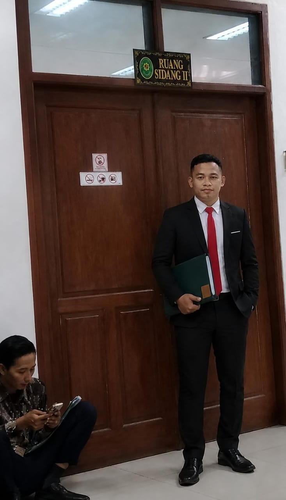
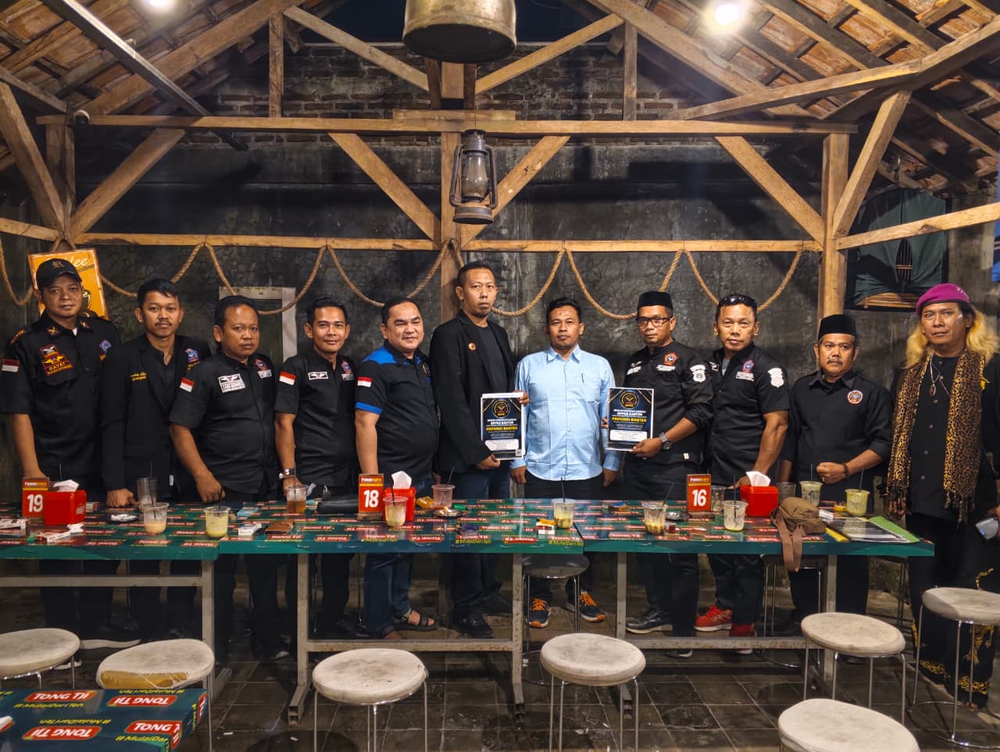
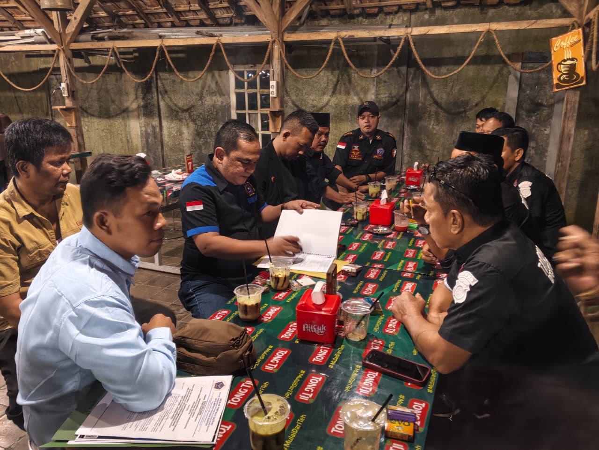

Profil Kantor
Tentang Kami
TB Abdul Fatah, S.H. dan Rekan adalah tim advokat berpengalaman di bidang hukum litigasi dan non-litigasi, serta konsultan hukum terpercaya. Beliau telah menangani berbagai kasus hukum dari perdata, pidana, hingga korporasi dengan pendekatan profesional dan solutif.
Riwayat & Keanggotaan
Pendidikan
Sarjana Hukum
Sekolah Tinggi Ilmu Hukum (STIH) Painan
PERSADIN
Persatuan Advokat Indonesia
Ketua DPD BPPKB Banten
Badan Pembinaan Potensi Keluarga Besar
Layanan Hukum
Bidang Keahlian
Hukum Pidana
Penanganan kasus kriminal, praperadilan, dan pendampingan proses hukum.
Hukum Bisnis
Pendirian PT, kontrak bisnis, dan penyelesaian sengketa dagang.
Hukum Perdata
Sengketa, kontrak, waris, dan perkara perdata niaga.
Hukum Agraria
Sengketa tanah dan pengurusan sertifikasi.
Hukum Keluarga
Perceraian, hak asuh anak, dan perwalian.
Hukum Ketenagakerjaan
PHK, PPHI, kontrak kerja, dan pesangon.
Bacaan Hukum
Artikel Hukum
Hak Pekerja Saat PHK
Ketahui hak-hak yang wajib diterima oleh pekerja ketika mengalami pemutusan hubungan kerja.
Baca SelengkapnyaPerbedaan Pidana dan Perdata
Penjelasan ringkas mengenai perbedaan mendasar antara hukum pidana dan hukum perdata di Indonesia.
Baca SelengkapnyaPanduan Perceraian di Pengadilan
Langkah-langkah hukum yang perlu diketahui sebelum mengajukan gugatan cerai secara resmi.
Baca SelengkapnyaDokumentasi
Portofolio & Kegiatan Penanganan Kasus
Sebagian dokumentasi pendampingan sidang, mediasi, dan kegiatan organisasi TB Abdul Fatah, S.H. dan Rekan.




Mulai Konsultasi
Konsultasi Via Online Atau
Atur Pertemuan
Konsultasikan segala permasalahan hukum Anda secara gratis dan mudah cukup dengan menghubungi kami secara online, atau buat janji pertemuan secara fleksibel di tempat yang nyaman untuk Anda.
Konsultasi Sekarang